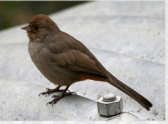
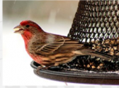
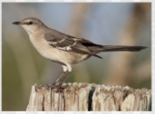
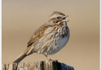
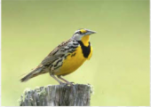
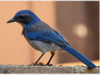

| 
I'M A CALIFORNIA TOWHEE GLAMOUR BIRD I may be prompted by a tireless knocking at your window or car mirror. |

I'M A HOUSE FINCH BIRD I build my nest in cavities, buildings, hanging plants, and other cup-shaped outdoor decorations. |

I'M A NORTHERN MOCKINGBIRD My mimicking ability, as reflected by my name, means "many-tongued mimic." |
| 
I'M A SONG SPARROW BIRD I use melodious and fairly complex songs to declare ownership of territory and to attract females. |

I'M A WESTERN MEADOWLARK My buoyant, flutelike melody can brighten anyone's day. |

I'M A WESTERN SCRUB JAYBIRD I am a fixture of dry shrublands, oak woodlands, and conspicuous visitors to backyards. |
California Backyard Birds are beautiful creatures!